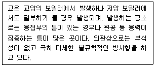
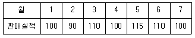
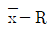

에너지관리기능장 (2012-04-08 기출문제)
1과목: 임의 구분
1. 고압증기 난방의 장점이 아닌 것은?
- 배관 경을 작게 할 수 있다.
- 난방 이외의 시설에도 증기공급이 가능하다.
- 배관의 기울기가 필요 없다.
- 공급열량에 유연성이 있다.
(정답률: 74%)

2. 원심력식(cyclone)집진장치에 대한 설명으로 틀린 것은?
- 처리 가스량이 많을 때는 소구경의 사이클론을 다수 병렬로 설치한 멀티론(multilone)을 채택한다.
- 가스속도를 증가하면 압력 손실이 증가하므로 집진율이 떨어진다.
- 접선 유입식보다 축류식이 동일압력에 대해 대량 집진이 가능하다.
- 공기누입, 안내날개 마모 현상은 집진율을 저하시킨다.
(정답률: 69%)
3. 증기 보일러에서 전열면적이 몇 m2 이하일 경우 안전밸브를 1개 이상으로 설치할 수 있는가?
- 50m2
- 60m2
- 80m2
- 100m2
(정답률: 71%)
4. 온수 평균온도 80℃, 실내공기 온도 18℃, 온수의 방열계수를 7.2kcal/m2ㆍhㆍ℃라 할 대 방열량은?
- 446.4kcal/m2 ㆍh
- 480kcal/m2 ㆍh
- 580.3kcal/m2 ㆍh
- 650kcal/m2 ㆍh
(정답률: 60%)
5. 보일러의 자동제어 장치인 인터록 제어에 대한 설명으로 가장 적합한 것은?
- 조건이 충족되지 않을 때 다음 동작이 정지되는 것
- 제어량과 설정목표치를 비교하여 수정 동작시키는 것
- 점화나 소화가 정해진 순서에 따라 차례로 진행되는 것
- 증기의 압력, 연료량, 공기량을 조절하는 것
(정답률: 91%)
6. 온수 보일러에서 순환펌프 설치 시 유의사항으로 잘못된 것은?
- 순환펌프의 모터부분은 수평으로 설치함을 원칙으로 한다.
- 순환펌프의 흡입측에는 여과기를 설치해야 한다.
- 순환펌프와 전원 콘센트간의 거리는 최소로 한다.
- 하향식 구조인 경우 반드시 바이패스 회로를 설치해야 한다.
(정답률: 66%)
7. 증기난방의 특징에 대한 설명으로 틀린 것은?
- 이용하는 열량은 증발 장열로써 매우 크다.
- 예열시간이 길고 응답속도가 느리다.
- 증기공급방식에는 상향 ㆍ 하향공급식이 있다.
- 증기를 공급하는 힘은 발생증기압으로 별도의 동력을 필요로 하지 않는다.
(정답률: 84%)
8. 유량측정 장치가 아닌 것은?
- 벤투리관
- 피토관
- 오리피스
- 마노메타
(정답률: 77%)
9. 체적과 시간으로부터 직접 유량을 구하는 유량계는?
- 피토관
- 벤투리관
- 로터미터
- 노즐
(정답률: 80%)
10. 일정압력으로 과잉수압에 의한 배관설비의 손상이 방지되는 급수방식은?
- 수도직결식
- 양수펌프식
- 압력탱크식
- 옥상탱크식
(정답률: 86%)
11. 보일러 과압 방지 안전장치의 설치에 대한 설명이 다. 틀린 것은?
- 증기보일러에는 2개 이상의 안전밸브를 설치하여야 한다.
- 안전밸브는 쉽게 검사할 수 있는 위치에 설치해야 한다.
- 안전밸브 축은 수평으로 설치하고 가능한 보일러의 동체에서 멀리 설치해야 한다.
- 안전밸브는 보일러 최대증발량을 분출하도록 그 크기와 수를 결정하여야 한다.
(정답률: 90%)
12. 급수의 온도 25℃, 보일러 압력이 15kgf/cm2, 상당 증발량이 2500kg/h 일 때 매시간당 증발량은 약 얼마인가? (단, 발생증기 엔탈피는 639kcal/kg 이다.)
- 2195 kg/h
- 2295 kg/h
- 3115 kg/h
- 3220 kg/h
(정답률: 34%)
13. 복사난방의 특징을 올바르게 설명한 것은?
- 방열기의 설치가 필요 없고 바닥면의 이용도가 낮다.
- 실내의 온도 분포가 균일하고 쾌감도가 낮다.
- 실내공기의 대류가 크고 바닥 먼지의 상승이 적다.
- 예열시간이 많이 걸리므로 일시적 난방에는 부적당하다.
(정답률: 72%)
14. 연도에 바이메탈 온도스위치를 부착시켜 화염의 유무 또는 보일러의 과열 여부를 검출하는 것은?
- 프레임 아이
- 스택 스위치
- 전자 개폐기
- 프레임 로드
(정답률: 85%)
15. 보일러 연료의 연소형태 중 버너연소가 아닌 것은?
- 기름연소
- 수분식연소
- 가스연소
- 미분탄연소
(정답률: 88%)
16. 기수공발(캐리오버)을 방지하기 위해서 보일러 내부에 설치되어 있는 장치는?
- 기스분리기
- 증기축열기
- 체크밸브
- 수저분출장치
(정답률: 84%)
17. 굴뚝 높이 140m, 배기가스의 평균온도 200℃, 외기온도 27℃, 굴뚝내 가스의 외기에 대한 비중을 1.⑤라 할 때 통풍력은 약 얼마인가?
- 36.3 ㎜Aq
- 49.8 ㎜Aq
- 51.3 ㎜Aq
- 55.0 ㎜Aq
(정답률: 39%)
18. 난방부하를 계산할 때 반드시 포함시켜야 하는 것은?
- 형광등으로부터의 발열부하
- 재실자로부터 발생하는 인체부하
- 틈새바람을 통한 열부하
- 커피포트 등에 의한 기기부하
(정답률: 91%)
19. 보일러 연소 시 공기비가 적을 경우의 장해에 해당되지 않는 것은?
- 불완전연소가 되기 쉽다.
- 미연소에 의한 열손실이 증가한다.
- 미연가스에 의한 역화 위험성이 있다.
- 연소실내의 온도가 내려간다.
(정답률: 84%)
20. 재생식 공기예열기의 설명으로 적당한 것은?
- 강판형과 관형의 2가지 형식이 있다.
- 일정시간 동안 공기와 열 가스가 교대로 금속판에 접촉 전열되어 열 교환하는 형식이다.
- 운동부가 없으며 누설의 우려가 없고 통풍손실이 적으며 구조가 간단하다.
- 증기로 연소용 공기를 예열하는 방식으로 저온부식이 방지된다.
(정답률: 64%)
2과목: 임의 구분
21. 보일러의 성능을 표시하는 방법이 아닌 것은?
- 상당증발량(kgf/h)
- 보일러마력
- 보일러전열면적(m2)
- 보일러지름(㎜)
(정답률: 84%)
22. 탄소 1kg이 완전 연소했을 때의 열량은 몇 kcal인가? (단, C + O2 → 97200kcal/kmol 이다.)
- 6075kcal
- 8100kcal
- 16200kcal
- 18400kcal
(정답률: 60%)
23. 보일러의 부속장치에 대한 설명 중 틀린 것은?
- 방폭문 : 보일러 내 가스폭발이나 역화 시 폭발한 가스를 외부로 배기시키는 장치
- 압력계 : 보일러 내의 압력을 측정하기 위한 장치
- 수위경보기 : 보일러 내의 수위가 안전저수위에 이르면 경보를 울리는 장치
- 압력제한기 : ON/OFF 신호를 급수밸브에 보내 급수를 공급, 차단하는 장치
(정답률: 75%)
24. 완전기체(perfect gas)가 일정한 압력 하에서의 부피가 2배가 되려면 초기온도가 27℃인 기체는 몇 ℃가 되어야 하는가?
- 54℃
- 108℃
- 300℃
- 327℃
(정답률: 77%)
25. 외부와 열의 출입이 없는 열역학적 변화는?
- 정압변화
- 정적변화
- 단열변화
- 등온변화
(정답률: 86%)
26. 보일러의 부속장치에서 슈트 블로어(soot blower)는?
- 연도를 청소하는 것이다.
- 연돌을 청소하는 것이다.
- 송풍기와 버너 사이에 있는 덕트(duct)를 청소하는 것이다.
- 보일러의 전열면에 부착된 불순물 등을 청소하는 것이다.
(정답률: 86%)
27. 당량농도라고도 하며, 용액 1kg 중의 용질 1mg당량으로 표시되는 단위는?
- ppm
- ppb
- epm
- 탁도
(정답률: 65%)
28. 보일러수에 함유되어 있는 물질 중 스케일 생성성분이 아닌 것은?
- 황산칼슘
- 규산칼슘
- 탄산마그네슘
- 탄산소다
(정답률: 81%)
29. 다음 중 에너지의 단위가 아닌 것은?
- kWh
- kJ
- kgf ㆍ m/s
- kcal
(정답률: 80%)
30. 엑서지(Exergy)에 대한 설명으로 틀린 것은?
- 열에너지를 전부 기계적 에너지로 변환시킬 수 없다.
- 열에너지로부터 얼마만큼의 기계적 일을 내게 할수 있는가를 나타낸다.
- 열에너지는 엑서지와 에너지의 합이다.
- 환경온도(열기관의 저열원)가 높을수록 엑서지는 크다.
(정답률: 69%)
31. 관속의 유체 흐름에서 일반적으로 레이놀드수가 얼마 이상이면 난류 흐름이 되는가?
- 2000
- 2500
- 3000
- 4000
(정답률: 73%)
32. 보일러 안전관리 수칙과 관련이 적은 것은?
- 안전밸브 및 저수위 연료차단장치는 정기적으로 작동 상태를 확인한다.
- 연소실내 잔류가스 배출을 위해 댐퍼의 개방상태를 확인한다.
- 보일러 연소상태를 수시 확인하고 적정 공기비를 유지한다.
- 급수온도를 수시로 점검하여 온도를 80℃ 이상을 유지한다.
(정답률: 93%)
33. 과열증기 사용 시의 장점으로 틀린 것은?
- 증기 소비량이 감소한다.
- 가열면의 온도가 균일하다.
- 습증기로 인한 부식을 방지한다.
- 증기의 마찰손실이 적다.
(정답률: 52%)
34. 보일러의 내부부식 주요 원인으로 볼 수 없는 것은?
- 급수 중에 유지류, 산류, 탄산가스, 염류 등의 불순물을 함유하는 경우
- 일반 전기배선에서의 누전으로 인하여 전류가 장시간 흐르는 경우
- 연소가스 속의 부식성 가스에 의한 경우
- 강재의 수축 표면에 녹이 생겨서 국부적으로 전위차가 발생하여 전류가 흐르는 경우
(정답률: 83%)
35. 가스버너 사용 시 옐로우 팁(Yellow Tip) 현상이 발생하는 것은 어떤 이유 때문인가?
- 1차 공기가 부족한 경우
- 염공이 막혀 염공의 유효 면적이 적은 경우
- 가스압이 너무 높은 경우
- 연소실 배기불량으로 2차 공기가 과소한 경우
(정답률: 58%)
36. 열관류율의 단위로 옳은 것은?
- kcal/kg ㆍ h
- kcal/kg ㆍ ℃
- kcal/m ㆍ ℃ ㆍ h
- kcal/m2 ㆍ ℃ ㆍ h
(정답률: 86%)
37. 다음 설명에 해당되는 보일러 손상 종류는?

- 가성취하
- 내부부식
- 블리스터
- 라미네이션
(정답률: 84%)
38. 10m의 높이에 배관되어 있는 파이프에 압력 5kgf/cm2 인 물이 속도 3m/s로 흐르고 있다면, 이 물이 가지고 있는 전 수두는 약 얼마인가?
- 30.13 mAq
- 40.24 mAq
- 50.35 mAq
- 60.46 mAq
(정답률: 42%)
39. 표준상태에서 프로판 가스 1kmol의 체적은?
- 22.41 m3
- 24.21 m3
- 20.41 m3
- 25.⑤ m3
(정답률: 77%)
40. 보일러 화학적 세정법에 관하여 옳게 설명한 것은?
- 산세관법에 사용하는 약품은 수산화나트륨, 인산소다, 암모니아가 사용된다.
- 화학세정의 목적은 보일러 내면의 스케일을 제거하고 보일러의 효율과 성능을 유지하기 위해서이다.
- 세정액 배출 후 물의 pH 3 이하가 될 때까지 충분히 물로 씻은 후 중화나 방청처리를 실시한다.
- 산세정 후 중화, 방청제로 염산을 사용한다.
(정답률: 80%)
3과목: 임의 구분
41. 에너지법에서 정한 에너지 위원회의 구성 및 운영에 관한 설명으로 옳은 것은?
- 위촉위원의 임기는 2년으로 하고, 연임할 수 있다.
- 위촉위원의 임기는 1년으로 하고, 연임할 수 있다.
- 위촉위원의 임기는 2년으로 하고, 연임할 수 없다.
- 위촉위원의 임기는 3년으로 하고, 연임할 수 있다.
(정답률: 92%)
42. 저탄소 녹색성장 기본법에서 정한 녹색성장위원회의 구성 및 운영에 관한 설명으로 틀린 것은?
- 위원회는 위원장 2명을 포함한 50명 이내의 위원으로 구성한다.
- 위원회의 사무를 처리하게 하기 위하여 위원회에 간사 위원 1명을 두며, 간사위원의 지명에 관한 사항은 지식경제부령으로 정한다.
- 대통령이 위촉하는 위원의 임기는 1년으로 하되, 연임할 수 있다.
- 위원장이 부득이한 사유로 직무를 수행할 수 없을 때에는 국무총리인 위원장이 미리 정한 위원이 위원장의 직무를 대행한다.
(정답률: 63%)
43. 연강용 피복 아크 용접봉 심선의 6가지 화학성분 원소로 맞는 것은?
- C, Si, Mn, P, S, Su
- C, Si, Fe, N, H, Mn
- C, Si, Ca, N, H, Al
- C, Si, Pb, N, H, Cu
(정답률: 82%)
44. 증기트랩에 대한 설명으로 옳은 것은?
- 증기를 열원으로 하는 열교환기 등 증기사용기기로 부터 외부에 생긴 드레인과 증기의 누설을 막아주는 밸브를 말한다.
- 증기를 열원으로 하는 열교환기 등 증기사용기기로 부터 내부에 생긴 드레인만을 배제하고 증기의 누설을 막아 주는 밸브를 말한다.
- 증기를 열원으로 하는 열교환기 등 증기사용기기로 부터 내부에 생긴 드레인만을 배제하고 증기의 누설을 통과시키는 밸브를 말한다.
- 증기를 열원으로 하는 열교환기 등 증기사용기기로 부터 외부에 생긴 드레인만을 배제하고 증기의 누설을 막아 주는 밸브를 말한다.
(정답률: 69%)
45. 파이프의 이음 방식의 하나인 파이프 홈 조인트로 파이프와 파이프를 홈 조인트로 체결하기 위한 파이프 끝을 가공하는 기계는?
- 베벨 조인트 머신
- 로터리식 조인트 머신
- 그루빙 조인트 머신
- 스웨징 조인트 머신
(정답률: 85%)
46. 알루미늄 도료에 관한 설명 중 틀린 것은?
- 400~500℃ 의 내열성을 지니고 있어 난방용 방열기 등의 외면에 도장한다.
- 알루미늄 도막은 금속광택이 있고 열을 잘 반사한다.
- 은분이라고도 하며 방청효과가 크고 습기가 통하기 어렵기 때문에 내구성이 풍부한 도막이 형성된다.
- 알루미늄 분말에 아마인유와 혼합하여 만든다.
(정답률: 77%)
47. 보일러에 사용되는 강재의 전단강도는 일반적으로 인장강도의 몇 %를 택하여 계산하는가?
- 50
- 65
- 70
- 85
(정답률: 60%)
48. 배관에 설치하는 신축 이음쇠의 종류가 아닌 것은?
- 루프형
- 벨로스형
- 스위블형
- 게이트형
(정답률: 90%)
49. 에너지이용 합리화법에서 정한 시공업자단체의 설립, 정관의 기재사항과 감독에 관하여 필요한 사항은 어느 령으로 정하는가?
- 대통령령
- 지식경제부령
- 환경부령
- 고용노동부령
(정답률: 82%)
50. 전동 밸브를 올바르게 설명한 것은?
- 온도조절기나 압력조정기 등에 의해 신호전류를 받아 전자코일의 전자력을 이용하여 밸브를 개폐한다.
- 주요밸브와 보조밸브가 있으며 적용유체의 자체압력을 이용한 것이다.
- 회전운동을 링크기구에 의하여 왕복운동으로 바꾸어서 제어밸브를 개폐한다.
- 화학약품을 차단하는 경우에 많이 쓰이며 유체의 흐름에 대한 저항이 적다.
(정답률: 80%)
51. 배관의 상부에서 관을 지지하는 것으로, 관의 상하방향 이동을 허용하면서 일정한 힘으로 관을 지지하는 것은?
- 콘스턴트 행거
- 리지드 행거
- 파이프 슈
- 롤러 서포트
(정답률: 71%)
52. 기기 장치의 모양을 배관 기호로 도시하고 주요밸브, 온도, 유량, 압력 등을 기입한 대표적인 배관 도면은?
- URS
- PID
- 관장치도
- 계통도
(정답률: 64%)
53. 내화물은 (분쇄) → (혼련) → (성형) → ( ) →(소성)등의 기본 공정을 거쳐서 제조한다. ( )에 들 어갈 용어로 맞는 것은?
- 건조
- 숙성
- 함습
- 스폴링
(정답률: 85%)
54. 배관작업용 공구에 대한 설명 중 맞는 것은?
- 플레어링 툴 : 소구경 동관의 끝을 교정하는데 사용한다.
- 리이머 : 관절단 후 관 외부의 거스러미를 제거하는데 사용한다.
- 사이징 툴 : 동관을 압축이음으로 하는데 사용된다.
- 튜브벤더 : 동관을 필요한 각도로 구부리기 위해 사용한다.
(정답률: 72%)
55. 여유시간이 5분, 정미시간이 40분일 경우 내경법으로 여유율을 구하면 약 몇 %인가?
- 6.33%
- 9.⑤%
- 11.11%
- 12.⑤%
(정답률: 60%)
56. 로트에서 랜덤하게 시료를 추출하여 검사한 후 그 결과에 따라 로트의 합격, 불합격을 판정하는 검사방법을 무엇이라 하는가?
- 자주검사
- 간접검사
- 전수검사
- 샘플링검사
(정답률: 94%)
57. 다음과 같은 [데이터]에서 5개월 이동평균법에 의하여 8월의 수요를 예측한 값은 얼마인가?

- 103
- 1⑤
- 107
- 109
(정답률: 58%)
58. 관리 사이클의 순서를 가장 적절하게 표시한 것은? (단, A는 조치(Act), C는 체크(Check), D는 실시 (Do), P는 계획(Plan)이다.)
- P → D → C → A
- A → D → C → P
- P → A → C → D
- P → C → A → D
(정답률: 78%)
59. 다음 중 계량값 관리도만으로 짝지어진 것은?
- c 관리도, u 관리도
- x-Rs 관리도, P 관리도
 관리도, nP 관리도
관리도, nP 관리도- Me-R 관리도,

관리도
(정답률: 56%)
60. 다음 중 모집단의 중심적 경향을 나타낸 측도에 해당하는 것은?
- 범위(Range)
- 최빈값(Mode)
- 분산(Variance)
- 변동계수(Coefficient of variation)
(정답률: 79%)